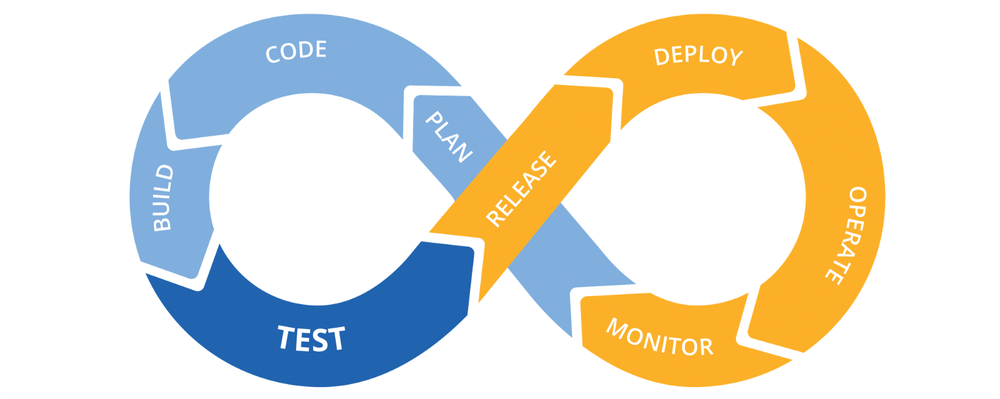
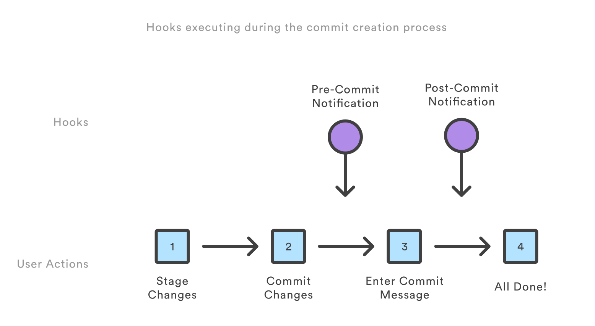

Fran Linde Blázquez
Ingeniero de Software
Desarrollador Webs/Apps desde 2013
Desarrollador Front-End en Minsait desde 2016
CI: Continuous Integration
CD: Continuous Delivery
RedHat: "La CI/CD (Integración Continua / Distribución Continua) es un método para distribuir aplicaciones a los clientes con frecuencia mediante el uso de la automatización en las etapas del desarrollo de aplicaciones."
Mundo ideal: Incluye desarrollo continuo
Control de versiones:
CI / CD:
Deployment:
Git Hooks
Permite configurar Hooks de Git rápidamente:
Instalación:
npm install husky --save-dev
Configuración:
// package.json
{
"husky": {
"hooks": {
"pre-commit": "npm test",
"pre-push": "npm test",
"...": "..."
}
}
}
HTML:
CSS/SCSS:
JS/TS:
1. Validación local (husky + angular test / lint / build
2. Validación en github (este repo)
3. Validación en gitlab (MATES)
3. Validación en bitbucket (OYSHO)